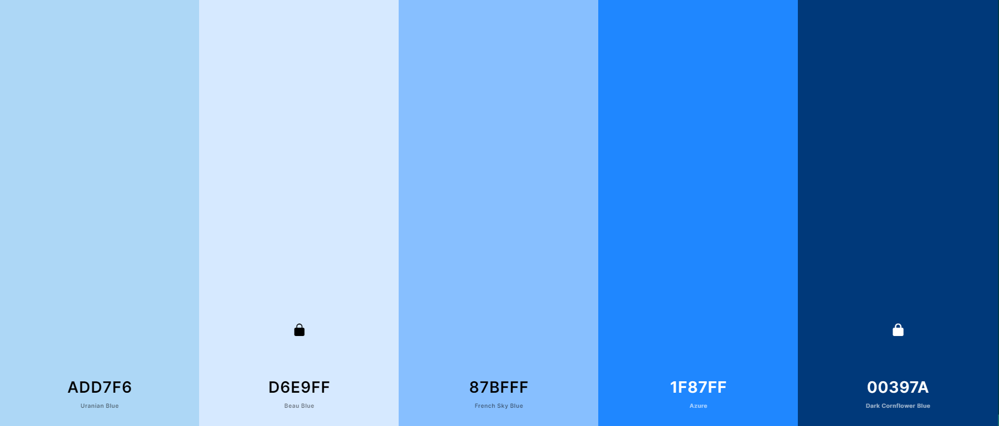
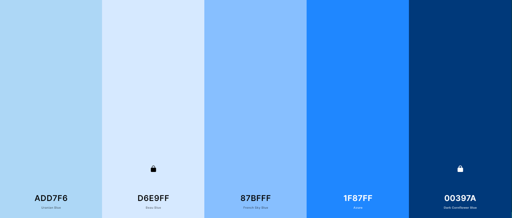

'Coolor' Scheme
For the color scheme of the site I chose to stick to a blue color and got similar shades of the color. I often times link the color blue to weather.
Here is the link to Coolors Scheme
Weather updates and more!
For the color scheme of the site I chose to stick to a blue color and got similar shades of the color. I often times link the color blue to weather.
Here is the link to Coolors Scheme
